컴퓨터응용가공산업기사 (2019-03-03 기출문제)
1과목: 기계가공법 및 안전관리
1. ø13이하의 작은 구멍 뚫기에 사용하며 작업대 위에 설치하여 사용하고, 드릴 이송은 수동으로 하는 소형의 드릴링머신은?
- 다두 드릴링머신
- 직립 드릴링머신
- 탁상 드릴링머신
- 레이디얼 드릴링머신
(정답률: 83%)

2. 윤활유의 사용 목적이 아닌 것은?
- 냉각
- 마찰
- 방청
- 윤활
(정답률: 80%)
3. 절삭공구에서 칩 브레이커(chip breaker)의 설명으로 옳은 것은?
- 전단형이다.
- 칩의 한 종류이다.
- 바이트 생크의 종류이다.
- 칩이 인위적으로 끊어지도록 바이트에 만든 것이다.
(정답률: 86%)
4. 드릴링 머신의 안전사항으로 틀린 것은?
- 장갑을 끼고 작업을 하지 않는다.
- 가공물을 손으로 잡고 드릴링 한다.
- 구멍 뚫기가 끝날 무렵은 이송을 천천히 한다.
- 얇은 판의 구멍가공에는 보조 판 나무를 사용하는 것이 좋다.
(정답률: 89%)
5. 서보기구의 종류 중 구동 전동기로 펄스 전동기를 이용하며 제어장치로 입력된 펄스 수만큼 움직이고 검출기나 피드백 회로가 없으므로 구조가 간단하며, 펄스 전동기의 회전 정밀도와 볼 나사의 정밀도에 직접적인 영향을 받는 방식은?
- 개방 회로 방식
- 폐쇄 회로 방식
- 반폐쇄 회로 방식
- 하이브리드 서보 방식
(정답률: 67%)
6. 게이지 블록 구조형상의 종류에 해당되지 않은 것은?
- 호크형
- 캐리형
- 레버형
- 요한슨형
(정답률: 58%)
7. 구성인선의 방지 대책으로 틀린 것은?
- 경사각을 작게 할 것
- 절삭 깊이를 적게 할 것
- 절삭속도를 빠르게 할 것
- 절삭공구의 인선을 날카롭게 할 것
(정답률: 75%)
8. 연삭숫돌의 입도(grain size) 선택의 일반적인 기준으로 가장 적합한 것은?
- 절삭 깊이와 이송량이 많고 거친 연삭은 거친 입도를 선택
- 다듬질 연삭 또는 공구를 연삭할 때는 거친 입도를 선택
- 숫돌과 일감의 접촉 면적이 작을 때는 거친 입도를 선택
- 연성이 있는 재료는 고운 입도를 선택
(정답률: 58%)
9. 밀링 분할판의 브라운 샤프형 구멍열을 나열한 것으로 틀린 것은?
- No.1 - 15, 16, 17, 18, 19, 20
- No.2 - 21, 23, 27, 29, 31, 33
- No.3 - 37, 39, 41, 43, 47, 49
- No.4 - 12, 13, 15, 16, 17, 18
(정답률: 67%)
10. 일반적인 밀링작업에서 절삭속도와 이송에 관한 설명으로 틀린 것은?
- 밀링커터의 수명을 연장하기 위해서는 절삭속도는 느리게 이송을 작게 한다.
- 날 끝이 비교적 약한 밀링커터에 대해서는 절삭속도는 느리게 이송을 작게 한다.
- 거친 절삭에서는 절삭 깊이를 얕게, 이송은 작게, 절삭속도를 빠르게 한다.
- 일반적으로 나비와 지름이 작은 밀링커터에 대해서는 절삭속도를 빠르게 한다.
(정답률: 60%)
11. 측정에서 다음 설명에 해당하는 원리는?
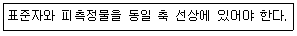
- 아베의 원리
- 버니어의 원리
- 에어리의 원리
- 헤르쯔의 원리
(정답률: 83%)
12. 절삭공구에서 크레이터 마모(crater wear)의 크기가 증가할 때 나타나는 현상이 아닌 것은?
- 구성인선(built up edge)이 증가한다.
- 공구의 윗면경사각이 증가한다.
- 칩의 곡률반지름이 감소한다.
- 날끝이 파괴되기 쉽다.
(정답률: 51%)
13. 주성분이 점토와 장석이고 균일한 기공을 나타내며 많이 사용하는 숫돌의 결합제는?
- 고무 결합제(R)
- 셀락 결합제(E)
- 실리케이트 결합제(S)
- 비트리파이드 결합제(V)
(정답률: 60%)
14. 드릴가공에서 깊은 구멍을 가공하고자 할 때 다음 중 가장 좋은 드릴가공 조건은?
- 회전수와 이송을 느리게 한다.
- 회전수는 빠르게 이송을 느리게 한다.
- 회전수는 느리게 이송은 빠르게 한다.
- 회전수와 이송은 정밀도와는 관계없다.
(정답률: 53%)
15. 밀링머신에서 커터 지름이 120mm, 한 날 당 이송이 0.1mm, 커터 날수가 4날, 회전수가 900rpm일 때, 절삭속도는 약 몇 m/min인가?
- 33.9
- 113
- 214
- 339
(정답률: 61%)
16. 방전가공용 전극 재료의 구비 조건으로 틀린 것은?
- 가공정밀도가 높을 것
- 가공전극의 소모가 적을 것
- 방전이 안전하고 가공속도가 빠를 것
- 전극을 제작할 때 기계가공이 어려울 것
(정답률: 84%)
17. 마이크로미터의 나사 피치가 0.2mm일 때 심블의 원주를 100등분하였다면 심블 1눈금의 회전에 의한 스핀들의 이동량은 몇 mm인가?
- 0.0⑤
- 0.002
- 0.01
- 0.02
(정답률: 77%)
18. 호칭치수가 200mm인 사인 바로 21° 30‘의 각도를 측정할 때 낮은 쪽 게이지 블록의 높이가 5mm라면 높은 쪽은 얼마인가? (단, sin21" 30'=0.3665이다.)
- 73.3mm
- 78.3mm
- 83.3mm
- 88.3mm
(정답률: 51%)
19. 슬로터(slotter)에 관한 설명으로 틀린 것은?
- 규격은 램의 최대행정과 테이블의 지름으로 표시된다.
- 주로 보스(boss)에 키 홈을 가공하기 위해 발달된 기계이다.
- 구조가 셰이퍼(shaper)를 수직으로 세워 놓은 것과 비슷하여 수직 셰이퍼(shaper)라고도 한다.
- 테이블의 수평길이 방향 왕복운동과 공구의 테이블 가로방향 이송에 의해 비교적 넓은 평면을 가공하므로 평삭기라고도 한다.
(정답률: 59%)
20. 가공능률에 따라 공작기계를 분류할 때 가공할 수 있는 기능이 다양하고, 절삭 및 이송속도의 범위도 크기 때문에 제품에 맞추어 절삭조건을 선정하여 가공할 수 있는 공작기계는?
- 단능 공작기계
- 만능 공작기계
- 범용 공작기계
- 전용 공작기계
(정답률: 55%)
2과목: 기계설계 및 기계재료
21. 일반적인 청동합금의 주요 성분은?
- Cu-Sn
- Cu-Zn
- Cu-Pb
- Cu-Ni
(정답률: 64%)
22. 플라스틱의 일반적인 특성에 대한 설명으로 옳은 것은?
- 금속재료에 비해 강도가 높다.
- 전기절연성이 있다.
- 내열성이 우수하다.
- 비중이 크다.
(정답률: 69%)
23. 다음 중 강자성체 금속에 해당되지 않는 것은?
- Fe
- Ni
- Sb
- Co
(정답률: 59%)
24. 철강 소재에서 일어나는 다음 반응은 무엇인가?
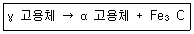
- 공석반응
- 포석반응
- 공정반응
- 포정반응
(정답률: 55%)
25. 다음 중 열처리 방법과 목적이 서로 맞게 연결된 것은?
- 담금질-서냉시켜 재질에 연성을 부여한다.
- 뜨임-담금질한 것에 취성을 부여한다.
- 풀림-재질을 강하게 하고 불균일하게 한다.
- 불림-재료의 결정 입자를 미세하게하고 조직을 균일하게 한다.
(정답률: 67%)
26. Al을 침투시켜 내식성을 향상시키는 금속침투법은?
- 보로나이징
- 칼로라이징
- 세라다이징
- 실리코나이징
(정답률: 65%)
27. 다음 중 합금 공구강에 해당되는 것은?
- SUS 316
- SC 40
- STS 5
- GCD 550
(정답률: 71%)
28. 기계가공으로 소성 변형된 제품이 가열에 의하여 원래의 모양으로 돌아가는 것과 관련 있는 것은?
- 초전도 효과
- 형상기억 효과
- 연속주조 효과
- 추소성 효과
(정답률: 81%)
29. 금속 표면에 스텔라이트, 초경합금 등을 용착시켜 표면 경화층을 만드는 방법은?
- 침탄처리법
- 금속침투법
- 쇼트피닝
- 하드페이싱
(정답률: 46%)
30. 두랄루민의 구성 성분으로 가장 적절할 것은?
- Al+Cu+Mg+Mn
- Al+Fe+Mo+Mn
- Al+Zn+Ni+Mn
- Al+Pb+Sn+Mn
(정답률: 77%)
31. 길이에 비하여 지름이 5mm 이하로 아주 작은 롤러를 사용하는 베어링으로, 일반적으로 리테이너가 없으며 단위 면적당 부하용량이 큰 베어링은?
- 니들 롤러 베어링
- 원통 롤러 베어링
- 구면 롤러 베어링
- 플렉시블 롤러 베어링
(정답률: 68%)
32. 응력-변형률 선도에서 재료가 파괴되지 않고 견딜 수 있는 최대 응력은? (단, 공칭응력을 기준으로 한다.)
- 탄성한도
- 비례한도
- 극한강도
- 상향복점
(정답률: 72%)
33. 체인 피치가 15.875mm, 잇수 40, 회전수가 500rpm이면 체인의 평균속도는 약 몇 m/s인가?
- 4.3
- 5.3
- 6.3
- 7.3
(정답률: 42%)
34. 950Nㆍm의 토크를 전달하는 지름 50mm인 축에 안전하게 사용할 키의 최소 길이는 약 몇 mm인가? (단, 묻힘 키의 폭과 높이는 모두 8mm이고, 키의 허용 전단응력은 80N/mm2이다.)
- 45
- 50
- 65
- 60
(정답률: 39%)
35. 다음 중 마찰력을 이용하는 브레이크가 아닌 것은?
- 블록 브레이크
- 밴드 브레이크
- 폴 브레이크
- 내부확장식 브레이크
(정답률: 57%)
36. 10kN의 인장하중을 받는 1줄 겹치기 이음이 있다. 리벳의 지름이 16mm라고 하면 몇 개 이상의 리벳을 사용해야 되는가? (단, 리벳의 허용전단응력은 6.5MPa이다.)
- 5
- 6
- 7
- 8
(정답률: 32%)
37. 축방향으로 32MPa의 인장응력과 21MPa의 전단응력이 동시에 작용하는 볼트에서 발생하는 최대전단응력은 약 몇 MPa인가?
- 23.8
- 26.4
- 29.2
- 31.4
(정답률: 41%)
38. 다음 커플링의 종류 중 원통 커플링에 속하지 않는 것은?
- 머프 커플링
- 울덤 커플링
- 클램프 커플링
- 셀러 커플링
(정답률: 42%)
39. 기어 감속기에서 소음이 심하여 분해해보니 이뿌리 부분이 깍여 나가 있음을 발견하였다. 이것을 방지하기 위한 대책으로 틀린 것은?
- 압력각이 작은 기어로 교체한다.
- 깍이는 부분의 치형을 수정한다.
- 이끝을 깍아 이의 높이를 줄인다.
- 전위기어를 만들어 교체한다.
(정답률: 48%)
40. 코일 스프링에서 코일의 평균 지름은 32mm, 소선의 지름은 4mm이다. 스프링 소재의 허용전단응력이 340MPa일 때 지지할 수 있는 최대 하중은 약 몇 N인가? (단, Wahl의 응력수정계수(K)는
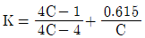
(C. 스프링지수)이다.)- 174
- 198
- 225
- 246
(정답률: 38%)
3과목: 컴퓨터응용가공
41. NC 가공 경로 계획에서 CL-Cartesian 방식에 대한 설명으로 틀린 것은?
- 곡면의 매개변수가 일정한 값들의 위치를 따라가면서 경로를 생성한다.
- CC-Cartesian 방식에 비하여 수치적 계산이 복잡하다.
- 곡면 가공시
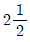
축 NC 기계에서도 사용가능한 공구 경로를 생성할 수 있다. - CL점이 이루는 곡면을 평면으로 절단하여 공구 경로를 생성한다.
(정답률: 31%)
42. 다음 NC/CNC/DNC에 대한 설명 중 옳지 않은 것은?
- NC(Numerical control, 수치제어)란 기계의 자세를 자동 제어함에 있어서 부호화된 수치정보를 사용하는 것을 가리킨다.
- NC공작기계의 컨트롤러 안에 컴퓨터를 결합시켜 넣음으로써 CNC(Computer Numerical Control) 공작기계가 탄생하였다.
- 직접 수치 제어(Direct Numerical Control, DNC)는 여러 개의 기계를 동시에 제어하기 위해 여러 대의 컴퓨터를 사용하는 생산 시스템을 말한다.
- 분산 수치 제어(Distributed Numerical Control, DNC)는 중앙 컴퓨터가 완전한 프로그램을 CNC에 다운로드하는 방식을 말한다.
(정답률: 60%)
43. 직육면체를 8개의 정점의 좌표(V1~V8)와 각 정점을 연결하는 모서리들(e1~e12)에 관한 정보로만 표현되는 모델은?
- Solid Model
- Surface Model
- Wire Frame Model
- System Model
(정답률: 68%)
44. 컬러 CRT 화면 뒤에 사용되는 인(Phosphor)의 색상이 아닌 것은?
- 적색(Red)
- 녹색(Green)
- 흰색(White)
- 청색(Blue)
(정답률: 75%)
45. 설계자에게 친숙한 형태의 모양을 미리 정의한 후에 이를 이용하여 보다 복잡한 형상을 모델링하는 방법은?
- 조립체 모델링
- 서피스 모델링
- 특징 형상 모델링
- 파라메트릭 모델링
(정답률: 65%)
46. 곡선을 표현하는 함수에 관한 설명으로 틀린 것은?
- 양 함수식에서는 하나의 곡선에 대하여 하나의 곡선의 식만 존재한다.
- 다항식으로 표현된 양함수곡선식은 매개변수방정식으로 변환이 가능하다.
- 다항식 곡선함수식에서 변환된 매개변수 방정식은 일반적으로 다항식이 아니다.
- 곡선식이 다항식인 경우 변환되는 동일한 곡선에 대하여 매개변수방정식은 하나뿐이다.
(정답률: 46%)
47. 간단한 형태의 솔리드를 이용하여 블리언연산(Boolean operation)으로 새로운 솔리드를 생성시키는 모델링 방법은?
- Surface Modeling 방법
- CSG 방법
- 오일러 방법
- sweep 방법
(정답률: 67%)
48. 임펠러(impeller)와 같이 언더컷(undercut)의 형상을 가진 부품의 가공 시 적합한 가공기계는?
- 1축 가공기
- 2축 가공기
- 3축 가공기
- 5축 가공기
(정답률: 67%)
49. 다음 중 NURRS 곡선에 관한 설명으로 틀린 것은?
- Conic 곡선을 표현할 수 있다.
- Blending 함수는 Bernstein 다항식이다.
- Blending 함수는 B-spline과 같은 함수를 사용한다.
- 조정점의 가중치(weight)를 변경하여 곡선형상을 변화시킬 수 있다.
(정답률: 46%)
50. 점을 표현하기 위해 사용되는 좌표계 중에서 기준축과 벌어진 각도 값을 사용하지 않는 좌표계는?
- 직교 좌표계
- 극 좌표계
- 원통 좌표계
- 구면 좌표계
(정답률: 52%)
51. 물리적 성질(체적, 관성, 무게, 모멘트 등)제공이 가능한 방법은?
- 스플라인 모델링(spline modeling)
- 시뮬레이션 모델링(simulation modeling)
- 곡면 모델링(surface modeling)
- 솔리드 모델링(solid modeling)
(정답률: 80%)
52. IGES 파일을 구성하는 6개의 섹션(Section)들 중, Directory Entry 섹션에서 기입한 각 요소를 정의하는 실제 데이터를 담고 있는 것은?
- Parameter Data 섹션
- Terminate 섹션
- Flag 섹션
- Global 섹션
(정답률: 68%)
53. 3차원 곡면가공에서 먼저 큰 직경의 엔드밀로 가공한 후 모서리 부분만을 가공하는 방법은?
- 면삭 가공
- 정삭 가공
- 펜슬 가공
- 포켓 가공
(정답률: 54%)
54. 다음 2차원 변환 행렬에서 축소, 확대(scaling)에 관련되는 행렬효소는?
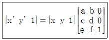
- a, b
- b, c
- e, f
- a, d
(정답률: 51%)
55. 하나의 전기펄스에 의하여 테이블이 이송되는 최소 단위 길이는?
- NC
- BLU
- MCU
- UNIT
(정답률: 65%)
56. 3차원 곡선(curve)을 정의하는 방법에 대한 설명으로 틀린 것은?
- Bezier 곡선은 주어진 시작점과 끝점을 통과한다.
- B-spline은 1점의 변경에 의한 곡선 전체에 주는 영향이 작다.
- B-spline은 곡선 전체의 연속성도 spline의 성격을 받아 이루어지기 때문에 좋다.
- Bezier 곡선은 1점의 변경에 의한 곡선 전체에 주는 영향이 없다.
(정답률: 65%)
57. RP(Rapid Prototyping) 방식들 가운데 열가소성 수지의 필라멘트를 열을 가하여 녹여서 액체 상태로 압출하여 각 층을 만들어 나가는 방식으로 저가형 RP 기계에 많이 사용되는 것은?
- Fused Deposition Modeling(FDM)
- Stereo Lithography(SL)
- Laminated Object Manufacturing(LOM)
- Selective Laser Sintering(SLS)
(정답률: 58%)
58. 서피드 모델(surface model)에 대한 설명으로 옳지 않은 것은?
- 은선 제거가 가능하다.
- NC data를 생성할 수가 있다.
- 복잡한 형상을 표현할 수 있다.
- 응력 해석용 모델로 사용할 수 있다.
(정답률: 64%)
59. 두 벡터의 크기가
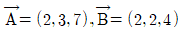
일 때, 두 벡터 사이의 내적은?- 38
- 35
- 28
- 25
(정답률: 41%)
60. 두 곡면을 적당히 가중 평균하여 곡면을 얻는 것으로 두 곡면의 연결 관계를 매끄럽게 이어주는 모델링 기법은?
- Sewwp
- Blending
- Skinning
- Re-meshing
(정답률: 62%)
4과목: 기계제도 및 CNC공작법
61. 제3각 정투상법으로 아래 입체도의 정면도, 평면도, 좌측면도를 가장 적합하게 나타낸 것은?
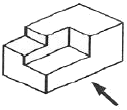
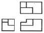
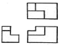
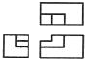
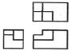
(정답률: 80%)
62. 다음 기하공차에 대한 설명으로 옳지 않은 것은?
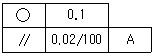
- 기하공차 값 0.1mm는 동심도 기하공차가 적용된다.
- 평행도 기하공차의 데이텀을 지시하는 문자는 A이다.
- 평행도 기하공차 값은 지정길이 100mm에 대해 0.02mm이다.
- 공차가 지시된 부분은 2개의 기하공차가 모두 적용된다.
(정답률: 56%)
63. 다음 중 V 벨트 전동장치에서 사용하는 벨트의 단면각은?
- 34°
- 36°
- 38°
- 40°
(정답률: 66%)
64. 그림과 같이 절단된 편심 원뿔의 전개법으로 가장 적합한 것은?
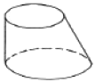
- 삼각형법
- 동심원법
- 평행선법
- 사각형협
(정답률: 53%)
65. 그림과 같이 표면의 결 도시기호가 있을 때 이에 대한 설명으로 옳지 않은 것은?
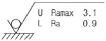
- 양측 상한 및 하한치를 적용한다.
- 재료 제거를 허용하지 않는 공정이다.
- 10개의 샘플링 길이를 평가 길이로 적용한다.
- 상한치는 산술평균편차에 max-규격을 적용한다.
(정답률: 61%)
66. 다음 나사를 나타낸 도면 중 미터 가는 나사를 나타낸 것은?
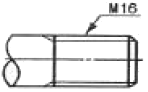
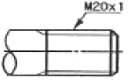
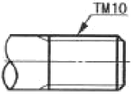
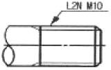
(정답률: 68%)
67. 도면을 작성할 때 다음 선들이 모두 겹쳤을 경우 가장 우선적으로 나타내야 하는 선은?
- 절단선
- 무게 중심선
- 치수 보조선
- 숨은선
(정답률: 73%)
68. 선의 종류와 용도에 대한 내용으로 틀린 것은?
- 굵은 실선:대상물이 보이는 부분의 모양을 표시하는 데 사용된다.
- 가는 1점 쇄선:중심이 이동한 중심궤적을 표시하는데 사용된다.
- 가는 2점 쇄선:얇은 두께를 가진 부분을 나타내는데 사용된다.
- 굵은 1점 쇄선:특수한 가공을 하는 부분 등 특별한 요구사항을 적용할 수 있는 범위를 표시하는데 사용된다.
(정답률: 66%)
69. 단면의 표시와 단면도의 해칭에 관한 설명으로 옳은 것은?
- 단면 면적이 넓은 경우에는 그 외형선을 따라 적절한 범위에 해칭 또는 스머징을 한다.
- 해칭선의 각도는 주된 중심선에 대하여 60°로 하여 굵은 실선을 사용하여 등간격으로 그린다.
- 인접한 다른 부품의 단면은 해칭선의 방향이나 간격을 변경하지 않고 동일하게 사용한다.
- 해칭 부분에 문자, 기호 등을 기입할 때는 해칭을 중단하지 않고 겹쳐서 나타내야 한다.
(정답률: 54%)
70. 다음 중 각도치수의 허용한계 값 지시 방법이 틀린 것은?
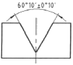
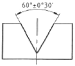
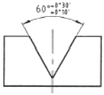
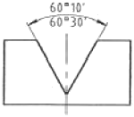
(정답률: 71%)
71. 다음 준비기능 중 지령한 블록 내에서만 유효한 코드는?
- G00
- G01
- G03
- G04
(정답률: 70%)
72. M10×1.5 탭 가공을 하기 위한 이송속도는 몇 mm/min인가? (단, 회전수는 600rpm이다.)
- 150
- 300
- 600
- 900
(정답률: 58%)
73. 머시닝센터의 자동공구 교환장치에서 매거진 포트 번호를 지령함으로써 임의로 공구 매거진에 장착하는 방법은?
- 랜덤(random) 방식
- 팰릿(pallet) 방식
- 시퀀스(sequence) 방식
- 터릿(turret) 방식
(정답률: 53%)
74. 서보 모터의 회전운동을 전달 받아 NC공작기계 테이블을 직선운동 시키는 것은?
- 서보기구
- 볼 스크류
- 컨트롤러
- 리졸버
(정답률: 53%)
75. 다음 CNC선반 프로그램에서 N30 블록의 주축 회전수는 얼마인가?
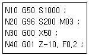
- 200
- 754
- 1000
- 1274
(정답률: 50%)
76. 서보기구에서 위치의 검출을 서보모터 축이나 볼 나사의 회전 각도로 검출하는 방식으로 일반 CNC공작기계에서 가장 많이 사용하는 것은?
- 반폐쇄회로 방식
- 위치결정 방식
- 개방회로 방식
- 폐쇄회로 방식
(정답률: 68%)
77. CNC선반 가공에서 ø70mm의 소재를 ø68mm가 되도록 가공한 후 측정한 결과 ø67.8mm이었다. 기존의 X축 보정값이 0.01이라면 보정값을 얼마로 수정하여야 하는가? (단, 직경지령을 사용한다.)(
- 0.19
- 0.21
- 0.22
- 0.23
(정답률: 60%)
78. 보조 프로그램을 호출할 수 있는 기능은?
- G30
- G98
- M98
- M99
(정답률: 68%)
79. CNC 공작기계의 일상 점검 사항이 아닌 것은?
- 각 부위 유량점검
- 각 부의 압력점검
- 각 부의 필터점검
- 습동면 급유상태 점검
(정답률: 60%)
80. 방전가공의 일반적은 특징으로 틀린 것은?
- 열 변형이 적어 가공 정밀도가 우수하다.
- 전극으로는 구리, Graphite 등을 사용하므로 성형이 용이하다.
- 전극이 소모된다.
- 강한 재료, 담금질한 재료, 가공 경화되기 쉬운 재료, 부도체 등의 가공이 용이하다.
(정답률: 66%)